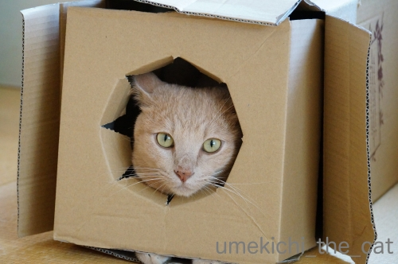
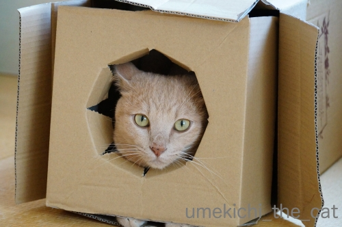

移ろう季節を感じる梅吉！？ [梅吉]
暑い盛りはあまり動かなかった梅吉さん。

撮れる写真はこんな寝姿や

こんな寝顔ばっかりだったのですがここ数日がぜん活動的になってきました。

梅吉さんはがぶがぶ顔がお似合いですよ＾＾

おとーさんの腕を抱え込んでます(⌒-⌒;
膀胱炎がらみで具合が悪いのか？夏バテか？？
４ちゃいにして早くも老成してしまった！？と少々心配していたのですが
梅吉はやっぱり梅吉の様で一安心(*>艸<)
まだまだ暑い日が続いていますが
立秋も過ぎ猫なりに活動の秋の気配を敏感に感じ取っているのでしょうか。

久しぶりに箱インしてドヤ顔ですw

箱の隙間から見えているお手手が萌えポイントー！！！0(≧▽≦)0
 ↑ガブッと一押し↑
↑ガブッと一押し↑
先週16日、京都に五山の送り火を見に行ってきました。
五山の送り火、空海が始めたと言われた時代もあった様ですが
近年は室町時代に始まった説が有力なんだとか。
たくさんの送り火が灯された時代もあった様ですが五山に絞られたのも割と最近の様です。
今回、京都東山にある青蓮院の飛び地、青龍殿大舞台から送り火を鑑賞するというバスツアーに参加。
位置関係はこんな感じ。
「ここ」が青龍殿の大舞台（清水の舞台の4.6倍の広さがあるそうですよ）。
①「大文字」大文字山＝如意ヶ嶽（テレビのニュースで取り上げられるのはここの『大』の字です）
②「松ヶ崎妙法」松ヶ崎西山、東山（少し離れた山の山頂に妙・法、それぞれの文字が現れます）
③「舟形万灯籠」船山
④「左大文字」北山（最初の大文字から見て左側のあるので左大文字。鏡文字ではありません。）
⑤「鳥居形松明」曼陀羅山
の順番で5分おきに火が灯されていきます。
大舞台からはこんな感じで京都市内が見下ろせました。この場所には将軍塚というのがあるのですが・・・
桓武天皇がこの地から下界を見下ろして平安遷都を決め
都の安泰を願って征夷大将軍坂上田村麻呂の甲冑を着せた人形を埋めたので将軍塚と呼ばれるそう。
この塚、京都に何か異変が起きる時にはガタガタと揺れるそうな。。。
なんてお話をバスガイドさんから聞きましたよ＾＾
さて、大文字焼きは20時から開始です。
ざわざわし始めたので向かって右側を見ると
や、山火事！？Σ(ﾟ◇ﾟ；)
残念ながら「大」の字はこれしか見えませんでしたw
続いて「妙」「法」
位置関係はこんな感じ。
続いて「船」。船底・帆・甲板、全部が惜しい！
「左大文字」お山が遠いので字も小さくしか見えません。
最後に「鳥居」の写真とご紹介したいところなのですがガスがかかっていたせいか
もともと見難い位置なのかわかりませんがうまく写真に写っていませんでした。
最初の文字が灯されてから約20分で全部の文字が浮かび上がります。
完璧に見えるとそれぞれがこんな感じの様ですよ。
で、青龍殿大舞台から眺めるツアーなのですが・・・
舞台最前列で１時間半近くじっと待つ根気のある方、背の高い方、
点火時刻が近づいて待っている人たちが一斉に立ち上がり
新たな場所取り合戦が始まった時にサバイブする自信のある方、にはオススメですwww
観光バスが先着するかどうかの運もあります。
どの戦いにも敗れた私は満足に肉眼で見えたものは残念ながら一つもありませんでした( ᐪᐤᐪ ）
17４.5cmのおっとは人垣の後ろから肉眼でちゃんと見えたそうです。羨ましいなぁ。
帰りのバスでガイドさんがおっしゃるには
青龍殿大舞台から「大文字」をみるのはちょっと無理ですよねって・・・(｣ﾟﾛﾟ)｣
（ツアー企画と観光バス運行の会社は別ですwww）
京都市内の大規模なホテルに泊まると宿泊客のみに屋上又は眺めの良いフロアを解放しているそうです。
それでも背の高いビルが増えた昨今五文字全てを見るのはなかなか難しい様で・・・
まして一般家庭から見るのは余程の好条件じゃないと無理なんだとか。
もしも送り火見学を考えている方は見たい文字・形を選んで
それが一番良く見えるスポットに出向くあるいは宿泊するのが一番の様ですよ。
そういうのを教えてくれるサイトもちゃんとあります。
蒸し暑い京都の夜の送り火、雰囲気だけは楽しんできましたm(_ _)m
ちょっとトリビア。
京都の人々は五山送り火のことは「だいもんじ」と呼ぶそうです。「さん」付くのかな？
この行事は一夜で終わらず翌日の朝、大文字山に登って消し炭をもらって完了するのだとか。
消し炭は玄関に飾って魔除けに、少しばかりを口にすると病気知らず＆病気が治ると言われているんですって。
2003年9月、阪神タイガース優勝目前（マジック２の点灯時？）に盛り上がったファンが大文字山に登り
懐中電灯で「HT」の文字を浮かび上がらせたんだとかw
信仰のお山でそんなことしちゃあかん！と警察沙汰になったそうです。
気持ちはわからなくもないですが、ねwwwww
撮れる写真はこんな寝姿や
こんな寝顔ばっかりだったのですがここ数日がぜん活動的になってきました。
梅吉さんはがぶがぶ顔がお似合いですよ＾＾
おとーさんの腕を抱え込んでます(⌒-⌒;
膀胱炎がらみで具合が悪いのか？夏バテか？？
４ちゃいにして早くも老成してしまった！？と少々心配していたのですが
梅吉はやっぱり梅吉の様で一安心(*>艸<)
まだまだ暑い日が続いていますが
立秋も過ぎ猫なりに活動の秋の気配を敏感に感じ取っているのでしょうか。

久しぶりに箱インしてドヤ顔ですw
箱の隙間から見えているお手手が萌えポイントー！！！0(≧▽≦)0
先週16日、京都に五山の送り火を見に行ってきました。
五山の送り火、空海が始めたと言われた時代もあった様ですが
近年は室町時代に始まった説が有力なんだとか。
たくさんの送り火が灯された時代もあった様ですが五山に絞られたのも割と最近の様です。
今回、京都東山にある青蓮院の飛び地、青龍殿大舞台から送り火を鑑賞するというバスツアーに参加。
位置関係はこんな感じ。
「ここ」が青龍殿の大舞台（清水の舞台の4.6倍の広さがあるそうですよ）。
①「大文字」大文字山＝如意ヶ嶽（テレビのニュースで取り上げられるのはここの『大』の字です）
②「松ヶ崎妙法」松ヶ崎西山、東山（少し離れた山の山頂に妙・法、それぞれの文字が現れます）
③「舟形万灯籠」船山
④「左大文字」北山（最初の大文字から見て左側のあるので左大文字。鏡文字ではありません。）
⑤「鳥居形松明」曼陀羅山
の順番で5分おきに火が灯されていきます。
大舞台からはこんな感じで京都市内が見下ろせました。この場所には将軍塚というのがあるのですが・・・
桓武天皇がこの地から下界を見下ろして平安遷都を決め
都の安泰を願って征夷大将軍坂上田村麻呂の甲冑を着せた人形を埋めたので将軍塚と呼ばれるそう。
この塚、京都に何か異変が起きる時にはガタガタと揺れるそうな。。。
なんてお話をバスガイドさんから聞きましたよ＾＾
さて、大文字焼きは20時から開始です。
ざわざわし始めたので向かって右側を見ると
や、山火事！？Σ(ﾟ◇ﾟ；)
残念ながら「大」の字はこれしか見えませんでしたw
続いて「妙」「法」
位置関係はこんな感じ。
続いて「船」。船底・帆・甲板、全部が惜しい！
「左大文字」お山が遠いので字も小さくしか見えません。
最後に「鳥居」の写真とご紹介したいところなのですがガスがかかっていたせいか
もともと見難い位置なのかわかりませんがうまく写真に写っていませんでした。
最初の文字が灯されてから約20分で全部の文字が浮かび上がります。
完璧に見えるとそれぞれがこんな感じの様ですよ。
で、青龍殿大舞台から眺めるツアーなのですが・・・
舞台最前列で１時間半近くじっと待つ根気のある方、背の高い方、
点火時刻が近づいて待っている人たちが一斉に立ち上がり
新たな場所取り合戦が始まった時にサバイブする自信のある方、にはオススメですwww
観光バスが先着するかどうかの運もあります。
どの戦いにも敗れた私は満足に肉眼で見えたものは残念ながら一つもありませんでした( ᐪᐤᐪ ）
17４.5cmのおっとは人垣の後ろから肉眼でちゃんと見えたそうです。羨ましいなぁ。
帰りのバスでガイドさんがおっしゃるには
青龍殿大舞台から「大文字」をみるのはちょっと無理ですよねって・・・(｣ﾟﾛﾟ)｣
（ツアー企画と観光バス運行の会社は別ですwww）
京都市内の大規模なホテルに泊まると宿泊客のみに屋上又は眺めの良いフロアを解放しているそうです。
それでも背の高いビルが増えた昨今五文字全てを見るのはなかなか難しい様で・・・
まして一般家庭から見るのは余程の好条件じゃないと無理なんだとか。
もしも送り火見学を考えている方は見たい文字・形を選んで
それが一番良く見えるスポットに出向くあるいは宿泊するのが一番の様ですよ。
そういうのを教えてくれるサイトもちゃんとあります。
蒸し暑い京都の夜の送り火、雰囲気だけは楽しんできましたm(_ _)m
ちょっとトリビア。
京都の人々は五山送り火のことは「だいもんじ」と呼ぶそうです。「さん」付くのかな？
この行事は一夜で終わらず翌日の朝、大文字山に登って消し炭をもらって完了するのだとか。
消し炭は玄関に飾って魔除けに、少しばかりを口にすると病気知らず＆病気が治ると言われているんですって。
2003年9月、阪神タイガース優勝目前（マジック２の点灯時？）に盛り上がったファンが大文字山に登り
懐中電灯で「HT」の文字を浮かび上がらせたんだとかw
信仰のお山でそんなことしちゃあかん！と警察沙汰になったそうです。
気持ちはわからなくもないですが、ねwwwww

カフェオレ色の梅吉

梅吉 2023年8月10日 永眠


梅吉と出会った譲渡会

犬猫の理由なき殺処分ゼロ
妄想広告
UMEKICHI 光

爆発的に早い！
時々攻撃的！
Thanks to Mr.Boss365
爆発的に早い！
時々攻撃的！
Thanks to Mr.Boss365

梅吉さん半分白目が素敵!
五山の送り火見たかったけど全部が見える場所はあまり無いのですね。
ちぃおっと様頑張って写真をお撮りになられてエライです。妙法は綺麗に見えてますよね。
by zombiekong (2019-08-19 00:30)
梅吉さんの太もも、魅力的です。
梅吉さんのがぶがぶ顔は凶暴ではありませんね（笑）
凶暴顔も魅力的だと思いますよ（笑）
箱入り息子のおてて、確かに萌えです（笑）
五山の送り火、果敢に挑戦というところですね。
人混みを考えると降参です（笑）
どの戦いに負けること確実！
by kiki (2019-08-19 00:38)
セクシーな太もも♪
でも美味しそうにも見える（笑
寝ている姿も可愛いですが
早く涼しくなって
もっと活発な梅吉さんも
見てみたいですね(#^.^#)
by きぃ (2019-08-19 06:45)
出ましたっ！白目！いやー、何度見てもこれはスバラシイ。
夏にぴったり、ぞわぞわもののお顔です。
五山の送り火に限らず、京都の名所のいい時期ってとにかく混む！というイメージがあって、全然近寄ろうともしてません(^^;;
ましてやそんな場所取り合戦があるだなんて、なんだか荘厳な風景を見に行きながら、目の前のちまちましたことが気になりそうでとっても苦手。
しかし、そういうツアーがあるとは知らなかった。勉強になりました。
ちぃさんの身長では無理とのこと、そこはもうピンヒールか厚底履いていくか、ご主人に高い高いをしてもらって見るしかないですね(^^;;
by ChatBleu (2019-08-19 06:48)
暑い時は若い子もお年寄りもみんなグッタリして動かないです＾＾；
by ぽちの輔 (2019-08-19 06:55)
梅吉さん、ちょっとだけ気温が下がってきて
ガブガブ復活おめでとうございます*\(^o^)/*
箱入りのドヤ顔にちょっとだけ見えるお手手が萌えますねぇ♪( ´▽｀)
by ニッキー (2019-08-19 07:18)
2003年に、そんな阪神ネタがあったとはー！
そらアカンのでしょうが、笑えるわー(≧∀≦)
by よーちゃん (2019-08-19 07:36)
白目からの～がぶがぶはインパクトありますね(^^
妖艶な太ももも見逃せませぬｗ
箱カツ復活は確かに秋の気配ですね。
丸い箱のくり抜きがライオンのタテガミのようで凛々しいですわ。
五山の送り火、バスツアーがあるのですか！
すべてを1か所で見るには無理があるのですね。参考になります。
この時期ホテルを取ってかぁ・・生きているうちに一度くらい見てみたいです。
by marimo (2019-08-19 07:53)
手に絡みつく梅吉さん、めちゃ可愛いです
山に描かれた炎の文字 翌日は 魔除けになるんですね(^^)
by チャー (2019-08-19 10:43)
あぁ、そのはみ出た下半身にノックアウトです(〃∇〃)
白目顔も捨てがたいですが(笑)ガブリ顔のかわいいこと❤
喜んでガブられますともっ(*￣ー￣*)ﾆﾔﾘｯ
箱のINの仕方がすばらしいですーーーｗ
見せ方をよくご存じで(≧∀≦)
鼻がすこしニジニジですよねっ(笑)
送り火鑑賞ツアーがあるなんて知りませんでした＾＾
そう、大文字焼とか言いますよねｗ
ってか、阪神ファンすごいな(*￣m￣)ﾌﾟｯ
優勝の間隔が開きすぎるので、そういうことをしたくなる
のかもしれませんが、逮捕されちゃいそうですよねｗｗ
by カトリーヌ (2019-08-19 10:50)
こんにちは。
梅吉くんの「腕がぶがぶ顔」可愛いですね。活性が戻ってきて何よりです。
箱イン？なんお箱だろう？丸穴ダンボール？扇風機と推測！！（笑）
萌えポイントのお手手！！とぼけた感じが一層良い感じです。
「京都・五山の送り火」をテレビで観ましたが、雄大な儀式？ですね。
京都でなければで出来ない感じ、バスツアーも面白そうです。
ホテル屋上は盲点かも？しかし、この時期は帰省中？
セカンドライフの楽しみに取っておきます。
「大文字」で思い出されるのは、無学なので「金鳥の夏」かな（笑）！？(=^･ｪ･^=)
by Boss365 (2019-08-19 11:37)
腕に巻きつく梅吉さん、いいお顔です♪
写真で見るととても可愛らしくて痛そうに見えませんが、痛いですよね～(≧▽≦)
ライオンのたてがみのようにダンボールを着こなす、さすがダンディ梅吉さんです！ 元気が一番ですね^^
五山の送り火は大昔、三条あたりのビルの屋上から、鳥居以外は見えた記憶がありますが、ホント、人混み見に行くようなもんですよね。
欲張らず1カ所に絞って行った事もありますが、どこ行っても混んでいるのは変わりません^^;
高層ホテルに泊まれば、帰りの混雑にも巻き込まれませんし、一番優雅に過ごせる気がします。
by ゆきち (2019-08-19 12:27)
腕にガブガブの梅吉さん、可愛いお顔してるわ〜♪
白目顔も捨てがたいです^^;。
うちの大阪の姉は、ホテルに泊まって見ると言ってました。
人混みは大変ですものね。今年は聞いてないから、行ってないのかな。
先日、違う所の送り火かもしれないけど、テレビでちょっと見ましたが、
山火事にならないように、つけている間、火が燃え広がるのを防ぐために
周りの火を消しながら、長時間頑張ってる人たちがいるんですね。
すごく大変そうでした。
by nachic (2019-08-19 15:18)
梅吉くんの魅惑の太もも激写ｗｗ
かぶりつきたくなるのはわたしだけだろうか(笑)
五山の送り火はバスツアーだったのですね。
連れて行ってもらえるのは楽だなーって思っちゃった^^)b
将軍塚はミステリースポットって言われてますね。
行ったことはないけどｗ
坂上田村麻呂と言えば、東北蝦夷のアテルイと戦った相手！！
小説での人物像と実際とではどうだったのか、タイムマシンがあったら
すごーく観察してみたい人物です。
by リュカ (2019-08-19 16:12)
五山送り火は学生の頃に見に行った事があります！
数十年前でしたが、やはり京都は暑かった思い出があります(^^)
梅吉さんは箱からお手々が出てますね。
by ma2ma2 (2019-08-19 17:39)
こちらは明日から最高気温が10℃も下がる予報です。隠れていた半外猫さん達も活発になるのでは・・・と心待ちにしています。
梅吉さん、綺麗に手を抱え込んでますね。甘噛みしている表情が良いですね～(^_^)
by kou (2019-08-19 17:55)
我が家のチビを撫でようとすると、2回に1回ぐらいの割合で、噛みついてキックされます。
本気で噛んできます。
ユキはほとんどそんなことをしません。
若い証拠だと思います＾＾
by riverwalk (2019-08-19 20:47)
ガブガブするときのお目目らんらんがいいわあ。私もガブられたい！
大文字観戦記、興味深く読みました！
ツアーかあ、行ってみたいけどサバイブにも身長にも
自信がありません…。
by liang (2019-08-19 21:08)
梅吉さん、秋を感じているのですね。
ひょっとして、抜け毛が一段落したのかな？ ^^;
ウチの猫は抜け毛がまだ収まりません。
五山送り火、一度見てみたいです。 ^^)
by yes_hama (2019-08-19 22:14)
梅吉さん、機関車トーマスみたいですよっ！(笑)
by でんさん (2019-08-19 23:26)
これから梅吉さんのガブガブが増えそうですね(^^♪
奈良の大文字は台風で中止になったので写真で楽しませていただきます。
by yamatonosuke (2019-08-20 01:29)
頭隠して脚隠さずだニャ（ﾟ□ﾟ）
がぶがぶ顔のお手手がいいニャ～
京都の五山の送り火は、私も見た事ありますが、かれこれ40年以上前なので全く覚えてません（ﾟ□ﾟ）
by 英ちゃん (2019-08-20 01:54)
梅吉さんが動くと秋の気配～～^^
by ニコニコファイト (2019-08-21 06:58)
こんにちは＾＾
少し涼しくなってきたから活発になってくる頃でしょう、梅吉ちゃん！
前の動画みて、お利口だなって思いました。シャワーしても動じないしガブっとしない梅吉ちゃん、良い子だよ～(^^)/
ネコシャンするとひとつのイベントが無事終わったって感じですよね。わかります。
「妙」「法」そして「大」ってくっきり写ってて凄いです！！！
沢山の人が行かれたのでしょうね。数年前に奈良の大文字じゃなくてお水取り、（偶然その日にそこに居たわたし）を観たことがあります。火を使ったこういった行事って観る側にもエネルギーが湧いてきますね。
京都大文字、いつか見てみたいです。京都に親戚がいるのにこういう行事のときって行けないのよね～
by ake_i (2019-08-21 15:18)
トンネルからのぞくセクシーな腿、段ボールの下からのぞくお手て・・・すべてが萌え萌えですなぁ(≧▽≦)
うちは大通りまで出ると(徒歩2分）左大文字が見えます。将軍塚から見たらそんな風に見えるのですね。京都に住んでながら知らなかったわ。確かに「五山の送り火」とは言わないですね。「だいもんじ」です。私は生粋の京都人ではないので言い切ることはできませんが、たぶん「さん」は付きません。今のところ聞いたことないですよ（*^_^*）
by palpal (2019-08-22 09:11)